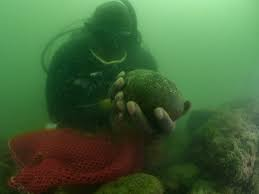

HISTORY & CULTURE
'Half my heart i left behind': Stories from Ukraine's refugees
READ

MAGAZINE
A diver’s hunt for lost slave ships led to an incredible journey
READ
HISTORY & CULTURE Out Of Eden Walk
These 3,000-year-old relics were torched and buried - but why?
READ
TODAY'S PICKS
HISTORY & CULTURE
3,200-year-old trees reveal the collapse of an ancient empire

SCIENCE
What happens during menopause?
ANIMALS
Why is Wombat poop cube-shaped?

MAGAZINE
A mesmerizing look at nature's eight-legged wonders
HISTORY MAGAZINE
Decoded secret letters reveal plot against Queen Elizabeth I

HISTORY MAGAZINE
Inside the decadence of Casanova's Venice